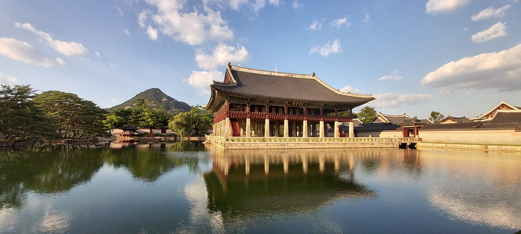

Starlight in Gyeongbokgung Palace

This year’s summer and fall Starlight Tour at Gyeongbokgung Palace will be open for reservations starting from 14:00 on August 19 either by phone or online at Auction Tickets. Each person can book up to two tickets.
The tour will take place two times a day from August 26 to October 19, excluding Tuesdays, when the palace is closed. The event will also not be available from September 12 to October 5.
International visitors who want to participate in an English-guided tour can sign up for the foreigner-exclusive tour on the dates listed below.
Starlight Tour at Gyeongbokgung Palace is a special evening program where participants can explore areas of Gyeongbokgung Palace that are usually restricted, including the huwon (backyard garden), under a starlit sky.
The program includes tasting royal cuisine in the sojubang (royal kitchen) while watching a gugak (traditional Korean music) performance and watching sand art at Gyotaejeon Hall (queen’s living quarters). The tour ends with a beautiful gugak solo recital held at Gyeonghoeru Pavilion.
More Information
Event period: May 27 (WED) – JUNE 8 (MON)
* Reservation period: August 19 – October 19, 2019
* Event is not held from September 12 – October 5, 2019
* Foreigner-exclusive Tours (English): September 5-6, October 10-11, 17-18
* Subject to cancellation in the event of heavy rain forecast. Participants will be notified individually.
Event schedule
1st Session 18:30-20:30 / 2nd Session 19:40-21:40
* Program takes place twice a day
* Closed Tuesdays
Venue
161, Sajik-ro, Jongno-gu, Seoul (서울특별시 종로구 사직로161)
Directions (Heungnyemun Gate)
Walk for approx. 10 min from Gyeongbokgung Station (Seoul Subway Line 3), Exit 4
* Gyeongbokgung Station Exit 5 is closed during nighttime
* Tour starts from Heungnyemun Gate
Fee: 50,000 won per person
* Must be 7 or older to participate
* People with disabilities can receive a 50% discount with a disability certificate
* Passport (or foreigner registration card) & reservation number required to enter
Major events
Gyeongbokgung Palace evening admission, traditional music performance, royal cuisine tasting experience, etc.
Inquiries
+82-2-1566-1369 (Korean, English)
Websites
- Gyeongbokgung Palace: www.royalpalace.go.kr (Korean, English)
- Auction Tickets: ticket.auction.co.kr (Korean, English, Japanese, Chinese)
* Online reservation opens at 14:00 on August 19, 2019
1330 Korea Travel Hotline
+82-2-1330 (Korean, English, Japanese, Chinese, Russian, Vietnamese, Thai, Malay)